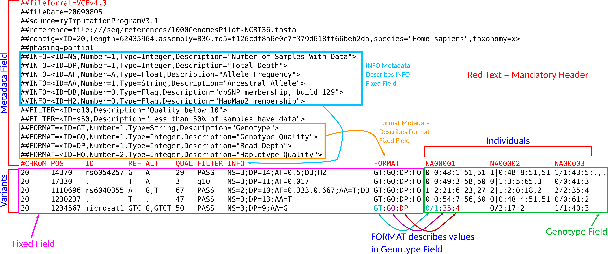

S4 and Bioconductor
David Gerard
2022-02-04
Learning Objectives
- Required Reading:
- More resources:
Motivation
The most common application of S4 objects is in the Bioconductor project, so we will use some of those base classes as an example.
Bioconductor also provides some of the best software to analyze genome-scale data. Being able to use it is vital for genomic researchers.
Bioconductor is huge, and learning that ecosystem would take a semester. Here, we will just learn the basic data types used within the
{VariantAnnotation}package.
Bioconductor Setup
Bioconductor is a repository for hosting R packages (just like CRAN).
But Bioconductor packages are focused on biological applications. They also share S4 objects that are designed to make analyzing biological data easier.
You do not use
install.packages()to install packages from Bioconductor, you useBiocManager::install(). So first make sure you have{BiocManager}installed on your computer:install.packages("BiocManager")Now install the
{VariantAnnotation}package, which is used for storing and manipulating genomic variants.BiocManager::install("VariantAnnotation")One thing you will notice from Bioconductor is that all S4 classes and all packages are in
UpperCamelCase, and S4 methods are inlowerCamelCase.
Basic Objects
The
{VariantAnnotation}package uses a lot of S4 objects which are common in the Bioconductor ecosystem.library(VariantAnnotation)We will go through these base classes before discussing the
{VariantAnnotation}package itself.
SimpleList
The
SimpleListclass is the S4 version of the basetypelist.The
SimpleListis defined in the{S4Vectors}package.Wherever you used a
list, you can also use aSimpleList.sval <- SimpleList(a = 1:4, b = c("A", "B", "C")) sloop::otype(sval)## [1] "S4"class(sval)## [1] "SimpleList" ## attr(,"package") ## [1] "S4Vectors"sval## List of length 2 ## names(2): a bsval$a## [1] 1 2 3 4sval$b## [1] "A" "B" "C"Internally, the slots are
@listData: A list containing the data.@elementType: A character of length 1 describing the subclass of theSimpleList.@elementMetadata: Annotates individual elements of theSimpleList.@metadata: Annotates theSimpleListas a whole.
DataFrame
The
DataFrameis an S4 version of adata.frame(which is an S3 class).The
DataFrameclass is from the{S4Vectors}package.Most of the operations you are used to for
data.frames can be used forDataFrames.df <- DataFrame(a = 1:3, b = c("A", "B", "C")) sloop::otype(df)## [1] "S4"df## DataFrame with 3 rows and 2 columns ## a b ## <integer> <character> ## 1 1 A ## 2 2 B ## 3 3 Cdf$a## [1] 1 2 3df[, 2]## [1] "A" "B" "C"Two differences:
- The
row.namesattribute is optional inDataFrames, but is required indata.frames. - The
DataFrameobject can have an slot calledelementMetadata, which is a anotherDataFramewhere each row indexes one of the columns of the originalDataFrame. So each row of the metadata contains information on each column of the data. You set and get this metadata withmcols().
row.names(df) ## no row.names## NULLmcols(df) <- DataFrame(DataFrame(info = c("1st", "2nd"), description = c("random", "stuff"))) mcols(df)## DataFrame with 2 rows and 2 columns ## info description ## <character> <character> ## a 1st random ## b 2nd stuff- The
There are other methods for
DataFrameobjects that do not exist fordata.frameobjects. See?`DataFrame-class` ?`DataFrame-combine` ?`DataFrame-utils`
CharacterList, NumericList, IntegerList, LogicalList
These atomic lists are extentions of the S4
Listobject that only holds atomic vectors.These are defined in the
{IRanges}package.E.g. an
IntegerListcan have many elements, but each one has to be an integer vector.il <- IntegerList(a = c(1L, 2L, 3L), b = c(4L, 5L, 6L, 7L, 8L)) il## IntegerList of length 2 ## [["a"]] 1 2 3 ## [["b"]] 4 5 6 7 8The reason to define lists in this way, is that you can perform operations simultaneously on all vectors in these atomic lists.
il + 1L## IntegerList of length 2 ## [["a"]] 2 3 4 ## [["b"]] 5 6 7 8 9il == 2## LogicalList of length 2 ## [["a"]] FALSE TRUE FALSE ## [["b"]] FALSE FALSE FALSE FALSE FALSEmax(il)## a b ## 3 8sum(il)## a b ## 6 30See the following for more information
?`AtomicList` ?`AtomicList-utils`
Rle
Rleclass is a an atomic vector that can more efficiently store vectors with long repeats via run-length encoding.It is defined in the
{S4Vectors}package.Instead of storing the entire vector when there are lots of repeats, run-length encoding just stores the value that is repeated (“values”) along with the number of times it is repeated (“lengths”).
Consider this vector with lots of repeats
x <- rep(c("A", "C", "T", "G"), 1:4) x## [1] "A" "C" "C" "T" "T" "T" "G" "G" "G" "G"We can instead store it as - “A” is copied once. - “C” is copied twice. - “T” is copied three times. - “G” is copied four times.
base::rle(x)## Run Length Encoding ## lengths: int [1:4] 1 2 3 4 ## values : chr [1:4] "A" "C" "T" "G"The
Rleclass does this run-length encoding behind-the-scenes.Let’s generate some very long data with lots of repeats:
lambda <- c(rep(0.001, 4500), seq(0.001, 10, length=500), seq(10, 0.001, length=500)) pvec <- rpois(1e6, lambda) head(pvec)## [1] 0 0 0 0 0 0rvec <- Rle(pvec)The size of the objects is dramatically different.
lobstr::obj_size(pvec)## 4,000,048 Blobstr::obj_size(rvec)## 1,205,384 BYou can treat
Rleobjects just like regular vectors.rvec[100]## integer-Rle of length 1 with 1 run ## Lengths: 1 ## Values : 0rvec + 1## numeric-Rle of length 1000000 with 150528 runs ## Lengths: 311 1 166 1 2539 1 523 ... 1 602 1 398 1 11 ## Values : 1 2 1 2 1 2 1 ... 2 1 2 1 2 1length(rvec)## [1] 1000000sum(rvec)## [1] 905136Rlehas more efficient ways to subset regions via thewindow()generic.window(rvec, 510445, 788990)## integer-Rle of length 278546 with 42414 runs ## Lengths: 70 2 7 1 1 1 1 3 ... 1 219 1 550 1 875 1 101 ## Values : 0 1 0 1 2 1 2 1 ... 1 0 1 0 1 0 1 0Get the run lengths via
runLength()head(runLength(rvec))## [1] 311 1 166 1 2539 1Get the values via
runValue()head(runValue(rvec))## [1] 0 1 0 1 0 1This class is really beneficial for genomic data, where DNA often has sequences of long repeats.
See the following for more operations available on
Rleobjects.?`Rle-class` ?`Rle-utils` ?`Rle-runstat`
IRanges
The
IRangesclass contains two integer vectors. The first specifies “start” positions, the second specifies “width” of the position.You should consider an
IRangesobject like a vector, where each element has a start position and a width.The idea is that you might want to describe what part of the genome you are considering (e.g. from base pair 107889 of width 2000 base pairs) without having to describe the sequence in that range.
iobj <- IRanges(start = c(5, 1001, 59999), width = c(87, 70, 101)) iobj## IRanges object with 3 ranges and 0 metadata columns: ## start end width ## <integer> <integer> <integer> ## [1] 5 91 87 ## [2] 1001 1070 70 ## [3] 59999 60099 101The “end” positions is not an internal slot. It is just printed via the
show()method of theIRangesclass.You can access the start, end, and widths of the ranges via
start(iobj)## [1] 5 1001 59999end(iobj)## [1] 91 1070 60099width(iobj)## [1] 87 70 101You can subset like a regular vector
iobj[1]## IRanges object with 1 range and 0 metadata columns: ## start end width ## <integer> <integer> <integer> ## [1] 5 91 87You can choose to only include regions that begin or end at some position
iobj[start(iobj) > 100]## IRanges object with 2 ranges and 0 metadata columns: ## start end width ## <integer> <integer> <integer> ## [1] 1001 1070 70 ## [2] 59999 60099 101I ranges are often used to extract elements with regions of interest.
E.g., remember the
Rleobject that we constructed:rvec## integer-Rle of length 1000000 with 150528 runs ## Lengths: 311 1 166 1 2539 1 523 ... 1 602 1 398 1 11 ## Values : 0 1 0 1 0 1 0 ... 1 0 1 0 1 0What if we want to get the values within the ranges that we constructed via the
IRangesobject? Then we just use regular bracket subsetting:rvec[iobj]## integer-Rle of length 258 with 92 runs ## Lengths: 157 1 1 1 1 1 1 1 ... 1 1 1 1 2 1 1 2 ## Values : 0 4 16 5 11 8 10 9 ... 8 5 8 7 5 9 10 7There is lots more that
IRangesimplements. See the help file for more.?`IRanges-class`
GRanges
The
GRangesS4 class is a vector-like class that represents genomic locations and their annotations.This class is defined in the
{GenomicRanges}package.Each element of a
GRangesclass contains (i) a sequence name, (ii) an interval of the sequence’s location, (iii) the strand, (iv) optional sequence information, and (v) some optional metadata.Below are the slots:
@seqnames: AnRleobject containing the sequence names (like chromosome 1, or mitochondrial chromosome, etc…)@ranges: AnIRangesobject containing the location and ranges of the DNA sequence.@strand: AnRLEobject containing the strand information.@seqinfo: Optionally provided. This is aSeqinfoclass object (which we haven’t covered) which contains metainformation on each sequence name. Specifically, the sequence name, the sequence length, whether the chromosome is circular, and the genome that the sequence comes from (like a specific assembly of the human genome)@elementMetadata: An optionalDataFrameobject containing metainformation for each element. The rows index the different locations on the genome and the columns index different types of metainformation.
Warning: Biology Note: Recall that DNA is a double helix with “A” paired with “T” and “G” paired with “C”. So you can read the sequences going in one direction (ATTTG) or in the other direction (CAAAT). One direction, which is the same order in which RNA builds proteins, is called the “sense” strand, or the “+” strand, or the 5’ to 3’ strand. The other direction, which is not the same direction that RNA uses to build proteins, is called the “antisense” strand, or the “-” strand, or the 3’ to 5’ strand. Undetermined strand is represented by “*“.
gr1 <- GRanges(seqnames = Rle(c("ch1", "chMT"), c(2, 4)), ranges = IRanges(16:21, 20), strand = rep(c("+", "-", "*"), 2)) gr1## GRanges object with 6 ranges and 0 metadata columns: ## seqnames ranges strand ## <Rle> <IRanges> <Rle> ## [1] ch1 16-20 + ## [2] ch1 17-20 - ## [3] chMT 18-20 * ## [4] chMT 19-20 + ## [5] chMT 20 - ## [6] chMT 21-20 * ## ------- ## seqinfo: 2 sequences from an unspecified genome; no seqlengthsThese are the various getters for the slots:
seqnames(gr1)## factor-Rle of length 6 with 2 runs ## Lengths: 2 4 ## Values : ch1 chMT ## Levels(2): ch1 chMTranges(gr1)## IRanges object with 6 ranges and 0 metadata columns: ## start end width ## <integer> <integer> <integer> ## [1] 16 20 5 ## [2] 17 20 4 ## [3] 18 20 3 ## [4] 19 20 2 ## [5] 20 20 1 ## [6] 21 20 0strand(gr1)## factor-Rle of length 6 with 6 runs ## Lengths: 1 1 1 1 1 1 ## Values : + - * + - * ## Levels(3): + - *seqinfo(gr1)## Seqinfo object with 2 sequences from an unspecified genome; no seqlengths: ## seqnames seqlengths isCircular genome ## ch1 NA NA <NA> ## chMT NA NA <NA>mcols(gr1)## DataFrame with 6 rows and 0 columnsYou can access start, end, and width directions directly without first extracting the
@rangesslot.start(gr1)## [1] 16 17 18 19 20 21end(gr1)## [1] 20 20 20 20 20 20width(gr1)## [1] 5 4 3 2 1 0You should think of a
GRangesobject as a vector where each element is a location on the genome.gr1[1]## GRanges object with 1 range and 0 metadata columns: ## seqnames ranges strand ## <Rle> <IRanges> <Rle> ## [1] ch1 16-20 + ## ------- ## seqinfo: 2 sequences from an unspecified genome; no seqlengthslength(gr1)## [1] 6gr1[start(gr1) > 18]## GRanges object with 3 ranges and 0 metadata columns: ## seqnames ranges strand ## <Rle> <IRanges> <Rle> ## [1] chMT 19-20 + ## [2] chMT 20 - ## [3] chMT 21-20 * ## ------- ## seqinfo: 2 sequences from an unspecified genome; no seqlengthsSee more by
?`GRanges-class`
DNAString
The
DNAStringclass (from the{Biostrings}package) allows for efficient storage of a single DNA sequence.The idea is that a
DNAStringis a single short sequence, or a whole chromosome, but only sequence.dna1 <- DNAString("ACGT-N") dna1## 6-letter DNAString object ## seq: ACGT-NThis is the same as a
characterexcept it can only be length 1, and there is alimit to the types of characters possible.The different characters possible are found via
IUPAC_CODE_MAP## A C G T M R W S Y K V ## "A" "C" "G" "T" "AC" "AG" "AT" "CG" "CT" "GT" "ACG" ## H D B N ## "ACT" "AGT" "CGT" "ACGT"- E.g. “B” means that the nucleotide could be C, G, or T, but not A.
In addition, “-” means a gap (because of an alignment, not a physical gap).
Sequence length is found by
length()orncar()methods.length(dna1)## [1] 6nchar(dna1)## [1] 6You can access a subsequence by bracket subsetting
dna1[2:4]## 3-letter DNAString object ## seq: CGTSee more by
?`DNAString-class`
DNAStringSet
The
DNAStringSetis a like acharactervector, except each element is aDNAStringinstead of astring.This class is also from the
{Biostrings}package.ds <- DNAStringSet(x = c("AAAGCC", "ACTATC", "TGCNNAA-CCTT")) ds## DNAStringSet object of length 3: ## width seq ## [1] 6 AAAGCC ## [2] 6 ACTATC ## [3] 12 TGCNNAA-CCTTIt operates like a character vector
ds[[1]]## 6-letter DNAString object ## seq: AAAGCCds[1:2]## DNAStringSet object of length 2: ## width seq ## [1] 6 AAAGCC ## [2] 6 ACTATClength(ds)## [1] 3You can operate on all DNA sequences at the same time with a few operations.
subseq(ds, start = 2, end = 4)## DNAStringSet object of length 3: ## width seq ## [1] 3 AAG ## [2] 3 CTA ## [3] 3 GCNSee more by
?`DNAStringSet-class`
DNAStringSetList
The
DNAStringSetListclass (also from{Biostrings}) is a list-like class where each element is aDNAStringSet.dna1 <- c("AAA", "AC", "", "T", "GGATA") dna2 <- c("G", "TT", "C") x <- DNAStringSetList(dna1, dna2) x## DNAStringSetList of length 2 ## [[1]] AAA AC T GGATA ## [[2]] G TT CThis is useful for storing multiple possible alleles that are varying in the population. E.g. below indicates that the first location is an A, the second is either an A or G, and the third is either an A or a T or a G.
dna_ex <- DNAStringSetList("A", c("A", "G"), c("A", "T", "G")) dna_ex## DNAStringSetList of length 3 ## [[1]] A ## [[2]] A G ## [[3]] A T GSee more by
?`DNAStringSetList-class`
VCF Files
Most DNA between two individuals of the same species is the exact same.
The differences are the interesting parts.
A location on the genome where there is a difference is called a variant.
The type of difference is called an allele.
E.g., suppose this is small part of the genome.
- Individual 1:
- …AAATAAACAGGCCAAATCCT…
- …AAATAATCAGGCCAAAGCCT…
- Individual 2:
- …AAATAATCAGGCCAAATCCT…
- …AAATAATCAGGCCAAAGCCT…
- Individual 3:
- …AAATAAACAGGCCAAAGCCT…
- …AAATAATCAGGCCAAAGCCT…
- At this location on the genome, there are two variants on the left and right (where the nucleotides are color-coded).
- At the first variant, we have two possible alleles — an “A” allele and a “T” allele.
- At the other variant we also have two alleles — a “T” allele and a “G” allele.
- Individual 1:
Each individual has two copies of their genome, and each copy is double-stranded. The above represents each copy, looking only at the sequence on one strand.
Most variants are like the two above, where there is only a single nucleotide that differs between individuals. These are callsed SNPs (Single Nucleotide Polymorphisms), pronounced “snips”.
Because we only care about the differences, we could represent them concisely with something like
## Ind1 Ind2 Ind3 ## SNP1 "A/T" "T/T" "A/T" ## SNP2 "T/G" "T/G" "G/G"The combination of alleles that an individual has a single locus is called its genotype. E.g. individual 1 has a genotype of “A/T” at SNP1, and individual 3 has genotype “G/G” at locus 2.
We often want to perform numerical operations on the genotypes, so we often choose one allele to act as the reference and the other as the alternative at each variant. The choice is usually arbitrary. We can then count the number of “alternative” alleles at each variant for each individual.
E.g., if we choose “A” to be the reference at SNP1, and G to be the reference at SNP2, then we can represent the above genotype matrix by
## Ind1 Ind2 Ind3 ## SNP1 1 1 1 ## SNP2 0 1 2But we would probably like to store which alleles are the references at which SNP’s, so that we don’t lose that information. If we were building an S4 class, we would probably include a slot for this.
This motivates the Variant Call Format (VCF) file for storing variant information.
The Variant Call Format (VCF) is a text-file format used to store variants between individuals at different locations (loci) on the genome.
The
{VariantAnnotation}reads in the VCF file and converts its format to an S4 object, obviating much of the need to understand the specifics of the format.But if you work with genomic data, you need to know the format.
VCF Diagram
Below is a sample VCF file (from the VCF spec) with 5 variants and 3 individuals.
knitr::include_graphics(path = "./05_figs/vcf_fig.png")
The VCF file is proken down as follows:
- A header with metadata (begginning with
##). These describe properties of other parts of the file. - Below the header, each row corresponds to a different variant. The columns can be subdivided as follows:
- A fixed field (columns
CHROM,POS,ID,REF,ALT,QUAL, andFILTER). These contain information that are variant specific (i.e. are the same for all individuals). - An info field (column
INFO) that contains additional variant specific information. - A genotype field, where the column names are the names of the individuals. In the above example,
NA00001,NA00002, andNA00003, but these names may vary. The genotype field contains information that is specific for that individual at that locus.
- A header with metadata (begginning with
The above file has five variants (five rows):
- A SNP with one reference allele “G” and one alternative allele “A”,
- Another SNP that did not pass quality checks, and so was filtered out.
- A SNP with one reference allele “A” and two alternative alleles “G” and “T”.
- A locus that is not a variant, because all individuals have a “T” there (this is called a monomorphic location)
- A more complicated variant (called a “microsattelite”) where the reference allele is “GTC” and the two alternative alleles are “G” and “GTCT”.
VCF files can get really complicated, since they have to be able to store complicated differences between genomes. Here, we will just talk about basic information, which is what most people use it for anyway.
See the spec for more information: http://samtools.github.io/hts-specs/VCFv4.3.pdf
Metadata
The Metadata field is at the top of the VCF file and begins with
##.The first line should say the version of VCF file format used (this is version 4.3).
There are some structured lines that must follow a certain format.
##INFOlines describe properties of the SNPs. You tell the VCF file the format of the INFO field through the metadata.##INFO=<ID=ID,Number=number,Type=type,Description="description",Source="source",Version="version">ID: Should be the name of the INFO field.Number: The number values for an INFO field.Type: The base type of the field.- The other arguments (
Description,Source,Version) are just strings that don’t matter, and are optional.
The possible values of
NumberValue Descriptions An integer, like 1or2The exact number of values AOne value per alternate allele ROne value for each allele GOne value per genotype .Any number of possible values The possible values of
Type:Integer,Float,Flag,Character, orString.Floatmeans decimal (kind of like doubles in R)FlagNo value. Either it shows up or doesn’t.
##FORMATlines describe the genotype fields that are possible.##FORMAT=<ID=ID,Number=number,Type=type,Description="description">numberandTypehave the same possibilities as the##INFOline.
Fixed Field
Under the metadata, you have the the “fixed” field, where each line is a specific property of the variant.
The header looks like this (with one
#)#CHROM POS ID REF ALT QUAL FILTER INFOCHROM: An identifier from the reference genome used to build the VCF file.POS: Reference position on the chromosome.ID: Name of the variant.REF: Reference allele.ALT: Alternative allele.QUAL: Quality of the SNP. Officially, this is an estimate of \(-10\log_{10}\text{Pr(call in ALT is wrong)}\). This is usually output by genotyping software.FILTER:PASSif the variant passed filters placed on it by the genotyping software. Otherwise a code for why it failed to the filter.
INFO field
The INFO field is also a part of the fixed data, where each line is information on an entire variant. But it can contain a lot of different information, so I’ll treat it as an additional field.
INFO: Semicolan separated additional information.The different keys in the
INFOcolumn are described by the##INFOline in the metadata.Table of common INFO keys (from VCF spec).
Key Number Type Description AA 1 String Ancestral allele AC A Integer Allele count in genotypes, for each ALT allele, in the same order as listed AD R Integer Total read depth for each allele ADF R Integer Read depth for each allele on the forward strand ADR R Integer Read depth for each allele on the reverse strand AF A Float Allele frequency for each ALT allele in the same order as listed (estimated from primary data, not called genotypes) AN 1 Integer Total number of alleles in called genotypes BQ 1 Float RMS base quality CIGAR A String Cigar string describing how to align an alternate allele to the reference allele DB 0 Flag dbSNP membership DP 1 Integer Combined depth across samples END 1 Integer End position on CHROM (used with symbolic alleles; see below) H2 0 Flag HapMap2 membership H3 0 Flag HapMap3 membership MQ 1 Float RMS mapping quality MQ0 1 Integer Number of MAPQ == 0 reads NS 1 Integer Number of samples with data SB 4 Integer Strand bias SOMATIC 0 Flag Somatic mutation (for cancer genomics) VALIDATED 0 Flag Validated by follow-up experiment 1000G 0 Flag 1000 Genomes membership
Genotype Fields
Genotype information according to a VCF file is a property of an individual at a locus.
This is different from the Fixed field. The Fixed field has information on variants (same across individuals). The Genotype field has information that differs based on both variants and individuals.
The genotype field for each sample is colon separated.
The
FORMATcolumn provides the order of the genotypes.The
##FORMATline in the metadata provides information on what the genotypes are.Common genotype keys (from VCF spec), with bold for the ones I see most often:
Field Number Type Description AD R Integer Read depth for each allele ADF R Integer Read depth for each allele on the forward strand ADR R Integer Read depth for each allele on the reverse strand DP 1 Integer Read depth EC A Integer Expected alternate allele counts FT 1 String Filter indicating if this genotype was “called” GL G Float Genotype likelihoods GP G Float Genotype posterior probabilities GQ 1 Integer Conditional genotype quality GT 1 String Genotype, with” /” meaning unphased and “|” meaning phasedHQ 2 Integer Haplotype quality MQ 1 Integer RMS mapping quality PL G Integer Phred-scaled genotype likelihoods rounded to the closest integer PP G Integer Phred-scaled genotype posterior probabilities rounded to the closest integer PQ 1 Integer Phasing quality PS 1 Integer Phase set
VariantAnnotation
The
{VariantAnnotation}package provides an S4 object that has a slot for each field from a VCF file.Let’s load in an example VCF file that comes with the package:
fl <- system.file("extdata", "chr22.vcf.gz", package="VariantAnnotation") vcf <- readVcf(fl, "hg19") vcf## class: CollapsedVCF ## dim: 10376 5 ## rowRanges(vcf): ## GRanges with 5 metadata columns: paramRangeID, REF, ALT, QUAL, FILTER ## info(vcf): ## DataFrame with 22 columns: LDAF, AVGPOST, RSQ, ERATE, THETA, CIEND, CIPOS,... ## info(header(vcf)): ## Number Type Description ## LDAF 1 Float MLE Allele Frequency Accounting for LD ## AVGPOST 1 Float Average posterior probability from MaCH/Thunder ## RSQ 1 Float Genotype imputation quality from MaCH/Thunder ## ERATE 1 Float Per-marker Mutation rate from MaCH/Thunder ## THETA 1 Float Per-marker Transition rate from MaCH/Thunder ## CIEND 2 Integer Confidence interval around END for imprecise var... ## CIPOS 2 Integer Confidence interval around POS for imprecise var... ## END 1 Integer End position of the variant described in this re... ## HOMLEN . Integer Length of base pair identical micro-homology at ... ## HOMSEQ . String Sequence of base pair identical micro-homology a... ## SVLEN 1 Integer Difference in length between REF and ALT alleles ## SVTYPE 1 String Type of structural variant ## AC . Integer Alternate Allele Count ## AN 1 Integer Total Allele Count ## AA 1 String Ancestral Allele, ftp://ftp.1000genomes.ebi.ac.u... ## AF 1 Float Global Allele Frequency based on AC/AN ## AMR_AF 1 Float Allele Frequency for samples from AMR based on A... ## ASN_AF 1 Float Allele Frequency for samples from ASN based on A... ## AFR_AF 1 Float Allele Frequency for samples from AFR based on A... ## EUR_AF 1 Float Allele Frequency for samples from EUR based on A... ## VT 1 String indicates what type of variant the line represents ## SNPSOURCE . String indicates if a snp was called when analysing the... ## geno(vcf): ## List of length 3: GT, DS, GL ## geno(header(vcf)): ## Number Type Description ## GT 1 String Genotype ## DS 1 Float Genotype dosage from MaCH/Thunder ## GL G Float Genotype Likelihoods
metadata slot
A list having header information. This is mostly arbitrary information.
metadata(vcf)## $header ## class: VCFHeader ## samples(5): HG00096 HG00097 HG00099 HG00100 HG00101 ## meta(1): fileformat ## fixed(2): FILTER ALT ## info(22): LDAF AVGPOST ... VT SNPSOURCE ## geno(3): GT DS GL
fixed slot:
This contains information from the
REF,ALT,QUAL, andFILTERcolumns from teh VCF file.fixed(vcf)## DataFrame with 10376 rows and 4 columns ## REF ALT QUAL FILTER ## <DNAStringSet> <DNAStringSetList> <numeric> <character> ## 1 A G 100 PASS ## 2 C T 100 PASS ## 3 G A 100 PASS ## 4 C T 100 PASS ## 5 C T 100 PASS ## ... ... ... ... ... ## 10372 A G 100 PASS ## 10373 A G 100 PASS ## 10374 A G 100 PASS ## 10375 G A 100 PASS ## 10376 G C 100 PASSREF:DNAStringSetobject. This contains the reference alleles at each locus.fixed(vcf)$REF[[1]]## 1-letter DNAString object ## seq: AALT:DNAStringSetListobject. Each element is aDNAStringSetcontaining the alternative alleles at each locus. In this case, there is only one alternative allele at every locus, but multiple alternative alleles are possible:all(lengths(fixed(vcf)$ALT) == 1)## [1] TRUEQUAL: Numeric vector. Again, this is \(-10\log_{10}\text{Pr(call in ALT is wrong)}\).FILTER: Character vector. Again, this is either"PASS"or a code for why it failed the filter.
rowRanges slot
A
GRangesobject, describing genomic locations of variant allong with annotations.rowRanges(vcf)## GRanges object with 10376 ranges and 5 metadata columns: ## seqnames ranges strand | paramRangeID REF ## <Rle> <IRanges> <Rle> | <factor> <DNAStringSet> ## rs7410291 22 50300078 * | NA A ## rs147922003 22 50300086 * | NA C ## rs114143073 22 50300101 * | NA G ## rs141778433 22 50300113 * | NA C ## rs182170314 22 50300166 * | NA C ## ... ... ... ... . ... ... ## rs187302552 22 50999536 * | NA A ## rs9628178 22 50999538 * | NA A ## rs5770892 22 50999681 * | NA A ## rs144055359 22 50999830 * | NA G ## rs114526001 22 50999964 * | NA G ## ALT QUAL FILTER ## <DNAStringSetList> <numeric> <character> ## rs7410291 G 100 PASS ## rs147922003 T 100 PASS ## rs114143073 A 100 PASS ## rs141778433 T 100 PASS ## rs182170314 T 100 PASS ## ... ... ... ... ## rs187302552 G 100 PASS ## rs9628178 G 100 PASS ## rs5770892 G 100 PASS ## rs144055359 A 100 PASS ## rs114526001 C 100 PASS ## ------- ## seqinfo: 1 sequence from hg19 genome; no seqlengthsBecause these are all SNPs, all of the ranges are length 1.
ranges(vcf)## IRanges object with 10376 ranges and 0 metadata columns: ## start end width ## <integer> <integer> <integer> ## rs7410291 50300078 50300078 1 ## rs147922003 50300086 50300086 1 ## rs114143073 50300101 50300101 1 ## rs141778433 50300113 50300113 1 ## rs182170314 50300166 50300166 1 ## ... ... ... ... ## rs187302552 50999536 50999536 1 ## rs9628178 50999538 50999538 1 ## rs5770892 50999681 50999681 1 ## rs144055359 50999830 50999830 1 ## rs114526001 50999964 50999964 1This information comes from the
POScolumn of the VCF and the sequence ofREF.
info slot
DataFrameobject with information on each variant.info(vcf)Each of those columns are a different INFO field described above.
You can get a description of the info fields by
info(header(vcf))## DataFrame with 22 rows and 3 columns ## Number Type Description ## <character> <character> <character> ## LDAF 1 Float MLE Allele Frequency.. ## AVGPOST 1 Float Average posterior pr.. ## RSQ 1 Float Genotype imputation .. ## ERATE 1 Float Per-marker Mutation .. ## THETA 1 Float Per-marker Transitio.. ## ... ... ... ... ## ASN_AF 1 Float Allele Frequency for.. ## AFR_AF 1 Float Allele Frequency for.. ## EUR_AF 1 Float Allele Frequency for.. ## VT 1 String indicates what type .. ## SNPSOURCE . String indicates if a snp w..
colData slot
A
DataFrameobject describing sample information.colData(vcf)## DataFrame with 5 rows and 1 column ## Samples ## <integer> ## HG00096 1 ## HG00097 2 ## HG00099 3 ## HG00100 4 ## HG00101 5Right now, this just has the sample number.
geno slot
A
SimpleListof matrix-like objects, containing the genotype datageno(vcf)## List of length 3 ## names(3): GT DS GLThe different genotype data possible are described above.
In this example, we have fields GT (the genotype), DS (genotype dosage), and GL (genotype likelihoods).
You can always get a description of the genotype fields with:
geno(header(vcf))## DataFrame with 3 rows and 3 columns ## Number Type Description ## <character> <character> <character> ## GT 1 String Genotype ## DS 1 Float Genotype dosage from.. ## GL G Float Genotype LikelihoodsYou can access these different matrices by
geno(vcf)$GL
Practical Usage of {VariantAnnotation}

This work is licensed under a Creative Commons Attribution-NonCommercial 4.0 International License.